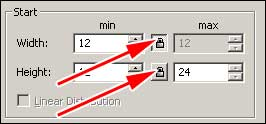

Every segment has a set of properties controlled by the properties window. These properties generally have a min and a max value. These min and max values control a range that the value could be. The wider the range, the more random the number chosen will be. Press the Lock Icon to use a constant number instead of a min/max range.

There are different properties for different types of segments, however most share some common properties. Below is a complete list of all segment property tabs:
This tab controls the start time, count, attenuation and general segment properties. |
|
This tab controls the lifetime of the sprite, the material used by the sprite and whether it should play any effects upon it’s lifetime ending. |
|
This tab controls the lifetime of the line, the material used by the sprite and whether it should play any effects upon it’s lifetime ending. |
|
The Electricity tab controls the lifetime of the electricity segment, the material used by the segment and whether it should play any effects upon it’s lifetime ending. An electricity segment has all of the features of the Sprite and Line tabs plus: |
|
The Origin tab controls placement of effect and bounds in which it will spawn. |
|
The Size tab is used to scale particles over their lifetime, set min/max size ranges and envelopes to use when scaling. |
|
This tab controls the Velocity, Acceleration and Friction of particles. |
|
Used to move the center of the segment in the game world. |
|
The Orbit tab has rotational controls for sprites around their origin. Used in conjunction with Offset. |
|
The Physics tab is used to apply impact physics to effects particles. |
|
The color tab adjusts color over the lifetime of a particle. |
|
The Alpha tab adjusts translucency over the lifetime of a particle. |
|
This tab adjusts rotation values over the lifetime of a particle. (Not found on a Line segment) |
|
The Length tab adjusts length values over the lifetime of a particle. (Only found on a Line segment) |
|
This tab contains motion trail options for particles. |